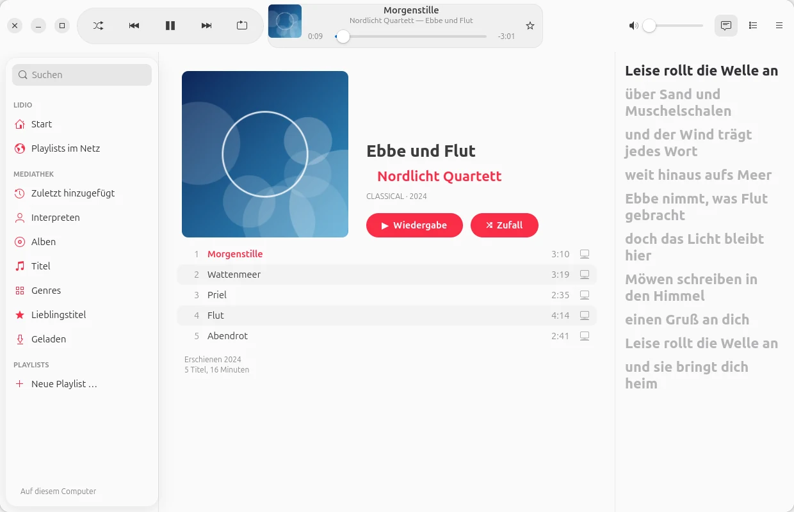
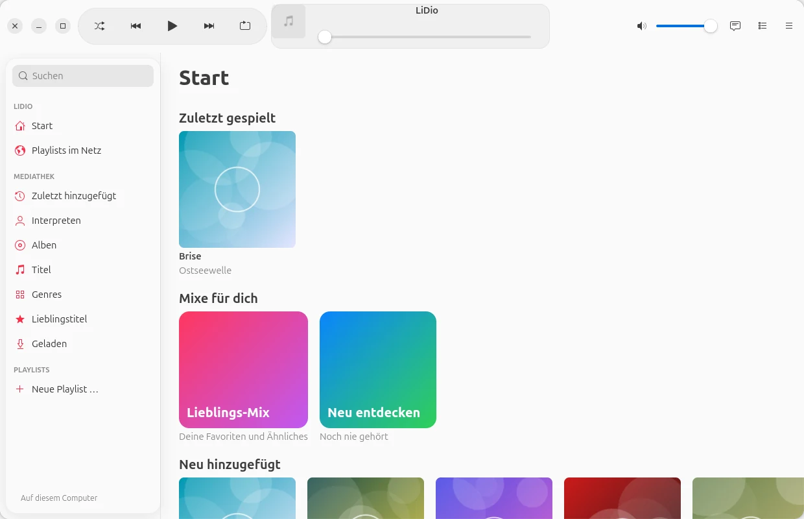
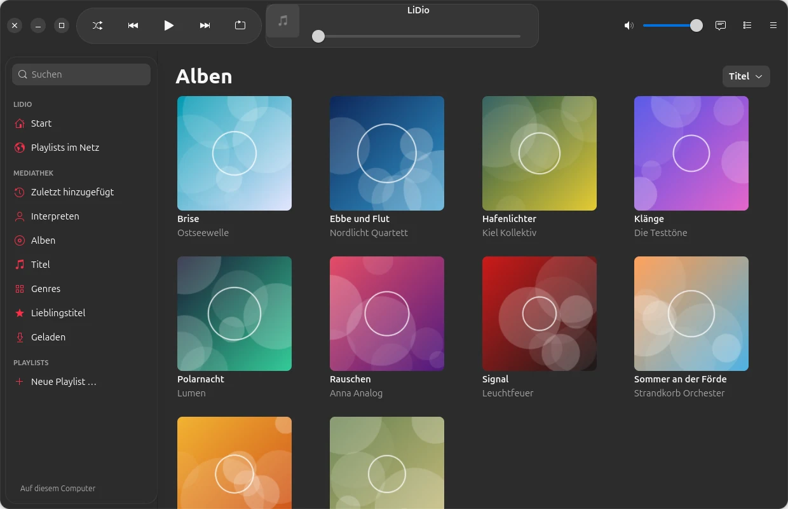
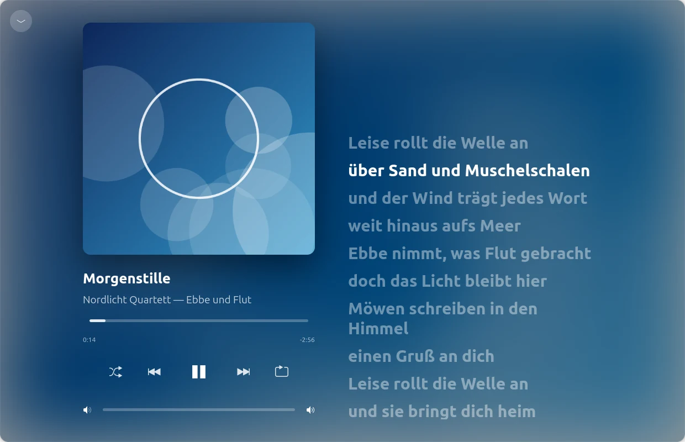
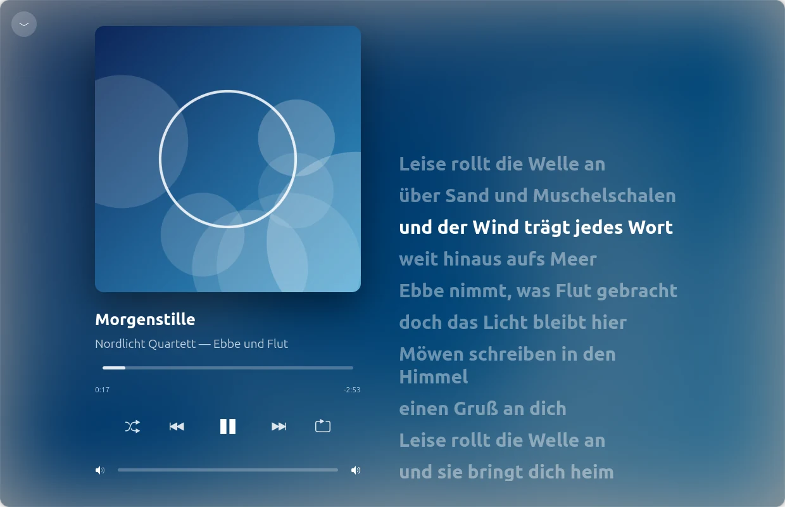
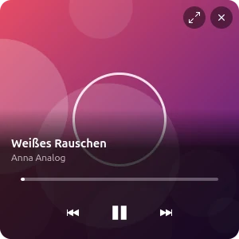

Neu: Version 0.1 Beta · Android und Ubuntu
Neu: Version 0.1 Beta · Android und Ubuntu
Deine Musik.
Dein Server.
LiDio spielt die Musik, die dir gehört – von deinem Emby, Jellyfin oder Navidrome zu Hause
oder aus Ordnern auf dem Gerät. Bedient wie die Musik-App von iPhone und Mac. Ohne Abo.

Gebaut wie die Musik-App.
Für deine eigene Sammlung.
Jahrelang Platten, CDs und Dateien gesammelt – und dann soll man sie nur in einer Abo-App hören? LiDio holt deine Sammlung so auf Handy und Computer, wie man es von Apple kennt: große Cover, klare Listen, „Jetzt läuft“ mit Liedtext. Gestaltet nach Apples Human Interface Guidelines, im modernen Glas-Look oder klassisch.
Mediathek
Alles an seinem Platz.
Start mit Mixen für dich, Alben, Interpreten, Titel, Genres, Lieblingstitel und Playlists – schnell, auch bei zehntausenden Titeln.


Jetzt läuft
Groß. Ruhig.
Mit Liedtext.
Das Cover füllt den Raum, seine Farben liegen weich dahinter, der Liedtext läuft mit – und ein Klick auf eine Zeile springt dorthin. Liedtexte kommen von deinem Server oder, wenn du willst, von lrclib.net.

Playlists
Deine Listen
ziehen mit um.
Playlists aus anderen Apps, von Deezer oder Spotify bringst du einfach mit: LiDio gleicht jeden Titel mit deinem Server ab – auch wenn er dort „(Remastered 2011)“ heißt.
- Gefunden, unsicher, fehlt: grün, orange, rot – bei Unsicherem wählst du selbst.
- Was fehlt, bleibt sichtbar: grau an seiner Stelle und in der Beschreibung der Playlist – lesbar in jeder App.
- Dateien: M3U, M3U8, PLS, XSPF, CSV oder einfach Text.
- Freigeben: für alle auf deinem Server oder einzelne Personen – zum Hören oder Mitbearbeiten.

Für Nostalgiker
Für alle,
die Winamp vermissen.
Ein Schalter, und LiDio wird zum Winamp-2-Player – mit echten Skins aus dem Winamp Skin Museum, Equalizer, Spektrum und Playlist-Fenster. Und Milkdrop malt dazu, was du hörst.
- Zehntausende Skins zum Durchsuchen, ein Klick zum Anziehen.
- Equalizer mit zehn Bändern, der wirklich auf den Klang wirkt.
- Milkdrop über projectM – im Fenster oder bildschirmfüllend.
- Mini-Player im Apple-Stil, wenn es schlicht sein soll.



Funktionen
Und so viel mehr.
Emby, Jellyfin, Navidrome
Dazu Ordner auf dem Gerät. Zu Hause die schnelle Adresse, unterwegs die zweite – LiDio wählt selbst.
Ohne Netz hören
Titel, Alben und Playlists aufs Gerät laden – einer nach dem anderen, mit Fortschrittsring an jedem Titel.
Lied teilen
Ein Link in Signal & Co. – wer LiDio hat, tippt drauf und hört den Titel aus der eigenen Mediathek.
Lieblingstitel und Mixe
Der Stern landet auf deinem Server. Daraus entstehen der Lieblings-Mix und „Neu entdecken“ mit Ungehörtem.
Warteschlange und Autoplay
Als Nächstes, Zuletzt, umsortieren – und wenn die Liste endet, geht es mit Ähnlichem aus deiner Sammlung weiter.
Rundgang und Anleitung
Beim ersten Start zeigt ein kurzer Rundgang die wichtigsten Stellen; die Anleitung steht in der App.
Datenschutz
Deine Musik
bleibt bei dir.
LiDio spricht mit deinem Server – und sonst nur dorthin, wo du es selbst einschaltest. Kein Konto bei uns, nichts in einer Cloud.
Liedtexte (lrclib.net), Deezer-Playlists und das Skin-Museum fragt LiDio nur, wenn du sie benutzt – und schickt dabei nur, was nötig ist: Titel und Interpret, den Suchbegriff.
Laden
Leg los. Kostenlos.
Version 0.1 Beta – für Android 10 und neuer sowie Ubuntu 24.04 und neuer.
Android
Herunterladen und installieren. LiDio fragt nach Benachrichtigungen (für die Wiedergabe-Steuerung) – sonst nichts.
App-Signatur
SHA-256: 423d95a4d6f4740ecd1325b55705f26f8e5f43675d2368d58a0d4976d3c95b0b
Ubuntu
Entpacken und ./install.sh ausführen – LiDio erscheint im Anwendungsmenü. Milkdrop baut das Skript auf Wunsch mit.
Quelltext
Jede Zeile einsehbar, auch die mitgelieferten Bibliotheken und ihre Lizenzen. Fehler oder Ideen gern im Issue-Tracker.
Entwickelt von Olaf Winkler in Schleswig-Holstein.
Prüfsummen: SHA256SUMS · Beta, weil LiDio bisher nur mit wenigen Servern getestet ist. Die Bilder zeigen eine erfundene Demo-Sammlung.